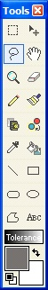

The picture to the right  shows
a region that was selected using the Lasso Selection Tool.
shows
a region that was selected using the Lasso Selection Tool.
Note: the selection outline (also known as "marching ants") will disappear when a selection is being moved.
Important: Once a selection region (or regions) are created, you may only alter that region. This includes any and all alterations. For instance, if selection regions are made, the Pencil Tool will only work in those regions until those regions are unselected. To deselect a region, ensure the Lasso Tool (or Rectangle Select) tool is activated, click on a region without dragging, and the the selection region will be cancelled. You may also click Edit --> Deselect to deselect everything. Then you may continue working on the entire canvas as a whole.